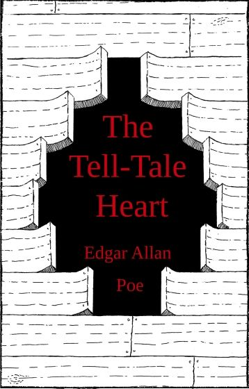

NON-FICTION
Non-fiction books are fantastic instruments for generating real-world connections to build on children's knowledge and personal experiences
See More...A Little Devil in America

A stirring meditation on Black performance in America from the New York Times bestselling author of Go Ahead in the Rain
ReadDownload

SHORT STORY
Good short stories have compelling story arcs, there is a sense of beginning, middle, and end, of start, conflict, and resolution. There is a satisfaction to finishing a story, and short stories offer much of this kind of pleasure.
See More...The Tell-Tale
The Tell-Tale Heart is Poe’s most renowned short story. Narrated by a murderer whose sanity gradually slips as he meditates on his crime and is haunted by the beating heart of his victim, this story helped to set the standard for early gothic romanticism.
ReadDownload
What our readers says?
The books are the best friends. Books are the treasure house of knowledge and wisdom. Let's take a look for our readers comment.

Book reading plays a major role in developing my personality. It build’s one character. Everytime I read, i feel like there's something new on me. This site is good, you got a thumbs up on me!
Reading gives you that much needed break from the chaos in your life. It instilss peace inside you, makes you relaxed and also exercises your brain in the process. Additionally, it gives you knowledge on a certain situation or happenings so thank you for this ((:
Pepal P. Ment